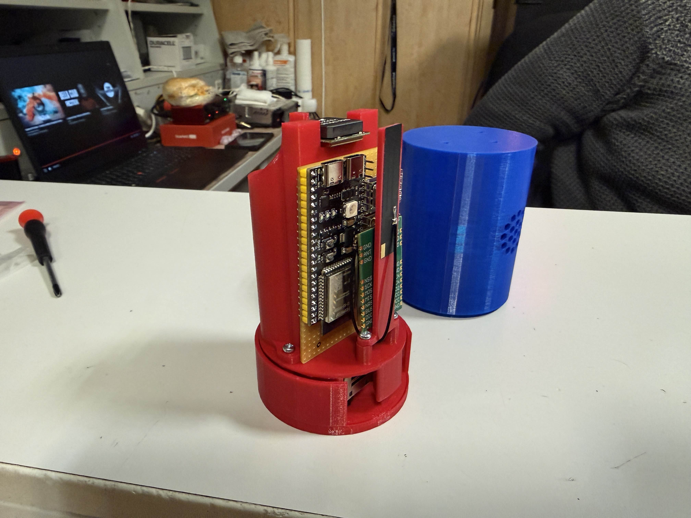
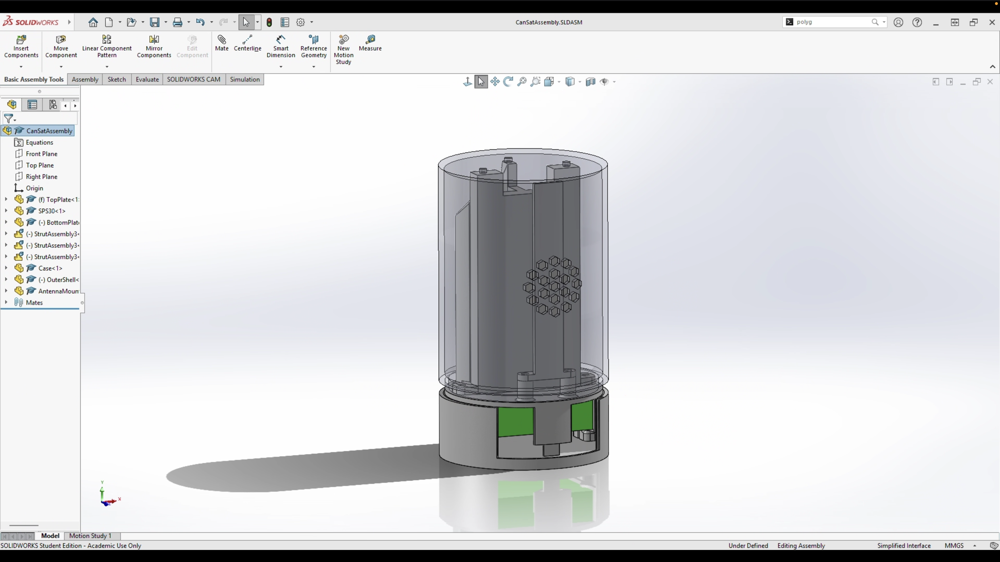
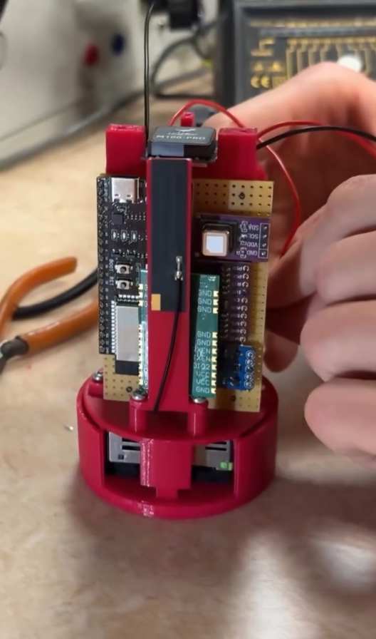
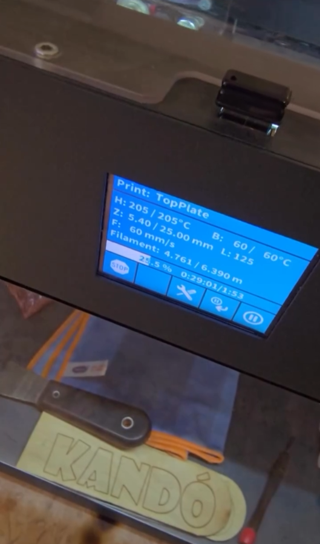
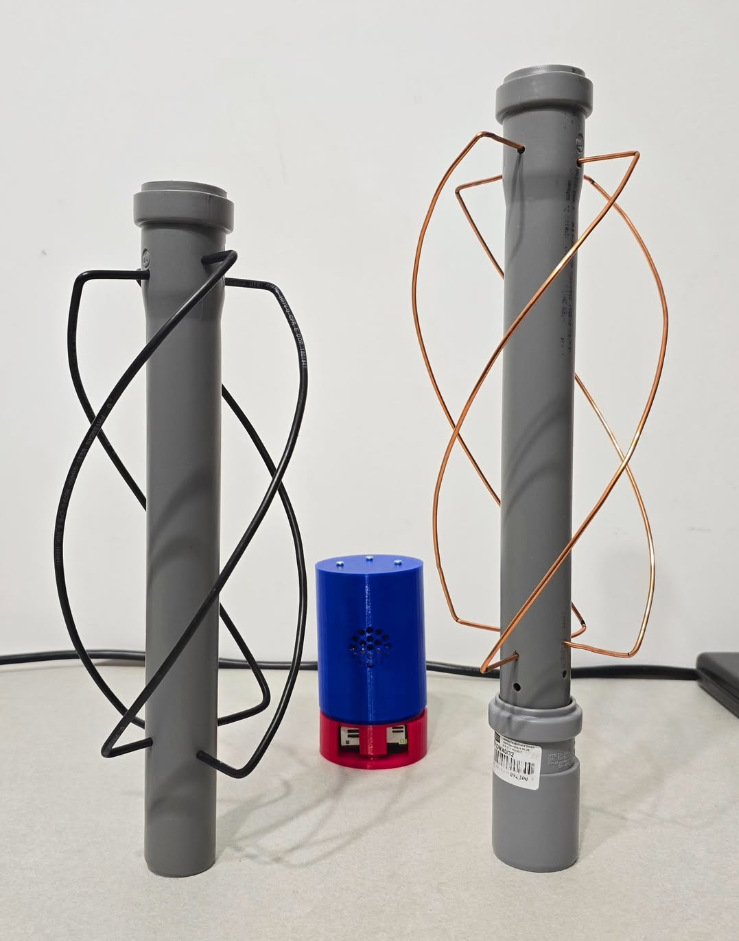

A CanSat Modell (3D Renders)

Cansatünk belülről
Az esp 32 és a modulok egyedi tervezésű illesztő áramkörön kapott helyet

A CanSat modell egyben auto cad ban
Modularitás és könnyű szerelhetőség.

Repülés teszt
A teszt ejtőernyő (mivel billegett ezért új ejtőernyőnk van már)
3D terv animáció
A videón látható a 3d tervünk animációja a komponensek nélkül és a benne lévő lengéscsillapító rendszer.
Technikai Adatok
| MCU (Vezérlő) | ESP32-S3-DevKitC-1 N16R8 |
| IMU (Mozgás) | BNO085 + QMC5883L |
| Légkörszenzorok | BMP585 (P/T), SCD40 (CO2) |
| Szálló por mérés | SPS30 Particulate Sensor |
| Pozicionálás | HGLRC M100-Pro GPS |
| Kommunikáció | 2x E22-900M30S LoRa |
| Áramellátás | 2x Cellevia 18650 Li-Ion |
| Töltésvezérlés | TP4056 + Boost Module |
| Váz anyaga | 3D Nyomtatott ABS |
Fejlesztési Fázisok


